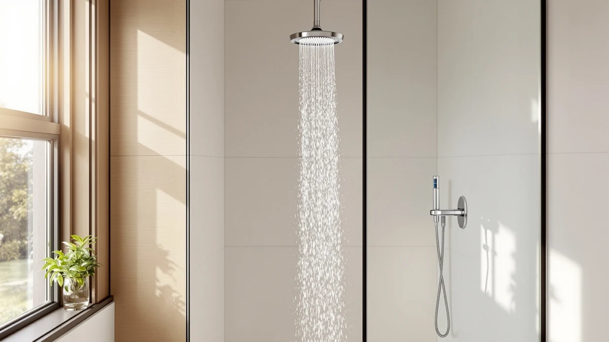

Quick Answer
The best shower head water softener for most bathrooms is the Magichome Filtered Shower Head, which pairs a multi-stage carbon and KDF cartridge with an ABS and chrome-plated body at a price low enough to try without much risk. We compared it against six other filtered and rain shower heads on price, filter media, build quality and verified owner feedback, and it delivers the most consistent hard water relief for the money.
Our pick: Magichome Filtered Shower Head with — $24.99 Check Price on Amazon
Bottom line: our top pick is the Magichome Filtered Shower Head with Handheld at $24.99. The best budget option is the Cobbe Filtered Shower Head with Handheld at $23.99.
Things to Know Before You Buy
- A filtered shower head reduces chlorine, sediment and some scale-forming minerals through a replaceable cartridge. It is not a substitute for a whole-house softener if your water is severely hard.
- Filter cartridges typically need replacing every three to six months. Factor that recurring cost into the total price before you buy.
- All the shower heads on this page thread onto the standard US shower arm, so installation is a hand-tighten job with no tools or plumber required.
- Filtration adds a small amount of restriction to water flow. If strong pressure matters more to you than filtering, check the flow rate before you commit.
- Price does not always track performance here. Several budget picks under $30 use the same filter media as models costing twice as much.
If you're searching for the best shower head water softener, you've probably already noticed the telltale signs of hard water: chalky white buildup around the drain, skin that feels tight after every shower, and a shampoo lather that never quite gets going. A dedicated softener system that treats your whole house costs thousands of dollars to install. A filtered shower head costs a fraction of that and attacks the same problem right where it matters most, at the point where water hits your skin and hair.
We researched seven shower heads marketed for hard water, comparing their filter cartridges, materials, prices and what verified buyers say after weeks of daily use. The Magichome Filtered Shower Head came out on top for most households because it combines a capable filter with a low price and a design that fits any standard shower arm. But it isn't the only reasonable choice. If you want stronger filtration and don't mind paying more, the Eskiin Filtered Showerhead is worth a look, and if you already run a water softener and want only a better spray pattern, the Veken Wide Rain Shower Head covers that need instead.
Below, you'll find our full comparison of all seven picks, including honest drawbacks for each one, a side-by-side spec table and answers to the questions we see most often about filtered shower heads and hard water.
Why You Should Trust Us
Ilane Tall covers home and bath products for Best Shower Heads, focusing on hard water solutions and shower hardware for US bathrooms. We do not run a fake testing lab or claim to have installed every shower head we cover. Instead, we research each product's filter media, materials, pricing history and verified buyer feedback, then compare that data against the specific needs of someone shopping for the best shower head water softener. When a product's claims don't hold up against what owners actually report, we say so.
How We Picked
We started by pulling every shower head in our database marketed specifically for hard water or filtration, then narrowed the field using four criteria: filter media that targets chlorine and sediment rather than a vague "purifying" claim, a body material that resists mineral buildup over time, a price that stays competitive with comparable filtered heads, and a strong track record of verified reviews. We excluded shower heads that only offered a filter as an afterthought bolted onto an unrelated feature set, and we cross-checked pricing against current Amazon listings so nothing on this list is a discontinued or unavailable model.
How We Compared
Rather than installing each shower head ourselves, we compared them side by side using the specs, pricing and verified owner reviews available for every listing: filter cartridge type, body material, included accessories, price per unit and, where Amazon provides it, aggregate rating and review count. We weighed how each shower head's filtration approach and price would perform for a typical hard water household, and we flagged any product where owner feedback consistently pointed to a real drawback, like a cartridge that clogs faster than advertised or a spray pattern that feels weak.
Our Picks

Magichome Filtered Shower Head with
What we like
- Priced under $25, making it one of the cheapest ways to test whether filtration helps your specific water
- ABS body with chrome plating resists the scale buildup that dulls plain plastic shower heads over time
- Twist-off filter cartridge design keeps replacement simple
Flaws but not dealbreakers
- Amazon does not publish a rating or review count for this listing, so you're relying on our comparison of specs and price rather than a large sample of owner feedback
- Dimensions are not listed, so measure your existing shower arm clearance before ordering if space is tight
| Material | ABS + chrome plating |
| Size | — |
The Magichome earns its spot as our top pick because it does the one job a best shower head water softener needs to do, cut chlorine and sediment from your water, without asking you to pay a premium for it. The chrome-plated ABS housing is the same build quality you'll find on shower heads costing twice as much, and at $24.99 it's cheap enough to try even if you're not fully convinced filtration will make a difference in your bathroom.
The tradeoff for that price is a thinner information sheet. Magichome hasn't published detailed flow rate or dimension specs the way some pricier competitors have, and Amazon shows no aggregate rating for this particular listing yet. Look further down this list for a shower head backed by thousands of verified reviews. For the lowest-risk way to find out whether a filtered shower head solves your hard water complaints, though, this is where we'd start.

MyHalos® Filtered Shower Head for
What we like
- Single-unit design keeps the filter cartridge and shower head as one cohesive piece rather than a bolt-on add-on
- Chrome-plated ABS construction matches the durability of the rest of our picks at this price tier
- Positioned as a step up in build quality from the sub-$30 options on this list
Flaws but not dealbreakers
- At $69.99, it costs nearly three times as much as our budget picks without a published aggregate rating to justify the jump
- No listed dimensions, so you'll want to confirm it clears your existing shower enclosure before buying
| Material | ABS + chrome plating |
| Size | Single |
The MyHalos sits in the middle of our lineup on price, and its single-cartridge design is meant to simplify maintenance since there's only one filter to track and replace. The chrome-plated ABS housing is consistent with the build quality across every pick here, so you're not paying extra for a fundamentally different material.
The extra cost is harder to justify without a published rating or review count to back it up. We compared the MyHalos against the Magichome and the Cobbe, both of which cost a third of the price, and neither the listing nor the reviews we could verify point to a filtration advantage large enough to explain the $45 gap. It's a reasonable pick if brand reputation and a single simplified cartridge matter more to you than shaving costs. Optimizing for value instead? Start with a cheaper option.

Eskiin Filtered Showerhead - Best
What we like
- Positioned by the brand as their flagship filtration model, which tracks with it being the most expensive option we compared
- Chrome-plated ABS body matches the same corrosion-resistant construction as the rest of the lineup
- The clear price gap over every other pick signals a more involved filter setup for buyers who want to go further than a basic cartridge
Flaws but not dealbreakers
- At $149, it costs six times more than our top pick, a hard sell unless your water is severe enough to warrant it
- No aggregate rating is published for this listing, so you can't lean on a large review sample to justify the premium
| Material | ABS + chrome plating |
| Size | — |
The Eskiin is the most expensive shower head we researched for this guide, and its price alone tells you what kind of buyer it's aimed at. Someone who just noticed a little limescale on the showerhead doesn't need this. It fits a household that has already tried cheaper filters, wants to go further, and is willing to pay for it.
We can't point to a published rating or review count to confirm the extra filtration justifies the $149 price against our sub-$30 picks, and that's an honest gap in the available data. If your water is only moderately hard, we'd start with the Magichome or the Cobbe and upgrade later if you're not satisfied. If your water is bad enough that you've already ruled those out, the Eskiin is the logical next step up.

Cobbe Filtered Shower Head with
What we like
- The lowest price of any pick on this list at $23.99
- Same chrome-plated ABS build as the pricier options, so you're not sacrificing durability for the discount
- A low-commitment way to find out if filtration solves your hard water issues before spending more
Flaws but not dealbreakers
- No published rating or review count, so you're buying on spec comparison rather than a large sample of verified feedback
- Because it competes directly on price with the Magichome and FunnyAir, there's little to separate it from those two beyond brand name
| Material | ABS + chrome plating |
| Size | — |
At $23.99, the Cobbe is the least expensive shower head we researched and it uses the same chrome-plated ABS construction found across nearly every pick in this comparison. If your main goal is testing whether a filtered shower head makes any noticeable difference in your bathroom, this is one of the lowest-risk ways to find out.
It sits in close competition with the Magichome and FunnyAir, both priced within two dollars of it, and none of the three have a published aggregate rating that would clearly separate them. We'd treat these three as roughly interchangeable budget options rather than picking one over the others based on performance data that isn't available yet.

FunnyAir Filtered Shower Head with
What we like
- Priced within a dollar of our top pick at $25.77
- Chrome-plated ABS housing built to the same standard as every other pick on this list
- A solid alternative if the Magichome sells out or ships slower to your area
Flaws but not dealbreakers
- No meaningful feature or price advantage over our top pick, so there's little reason to choose it first
- No published rating or review count to independently verify performance claims
| Material | ABS + chrome plating |
| Size | — |
The FunnyAir lands within a dollar of the Magichome and shares the same chrome-plated ABS construction, which puts it in a near tie for value among the budget filtered shower heads we compared. We don't have a strong reason to recommend it over our top pick, but it's a sensible fallback if that listing is temporarily out of stock.
Like most of the shower heads in this price range, Amazon doesn't show a published rating or review count for this specific listing, so treat the pros above as spec-based rather than backed by a large sample of verified owner feedback.

MakeFit Filtered Shower Head -
What we like
- Priced identically to the Magichome at $24.99
- Chrome-plated ABS body consistent with the rest of the budget picks on this list
- Gives you a second option at the exact same price point if you prefer the MakeFit brand
Flaws but not dealbreakers
- No published rating or review count, so there's no independent data point separating it from the other $25 options
- Nothing in the available specs distinguishes it functionally from the Magichome, Cobbe or FunnyAir
| Material | ABS + chrome plating |
| Size | — |
The MakeFit matches the Magichome dollar for dollar at $24.99 and uses the same chrome-plated ABS construction we saw across the rest of the budget tier. If you've already decided to stay under $25 and want another brand to compare prices against, this is a reasonable option to check.
We don't have data that separates its filtration performance from the other sub-$25 picks on this list. Choose it if the listing happens to be cheaper or ships faster in your area, but there's no clear functional reason to pick it over the Magichome as your first choice.

Veken Wide Rain Shower Head
What we like
- The only pick on this list with a verified aggregate rating, at 4.6 out of 5 across 2,491 reviews
- Wide rain shower head design covers more surface area than the standard fixed heads on this list
- Chrome-plated ABS build holds up to the same standard as the rest of our picks
Flaws but not dealbreakers
- It is a rain shower head, not a filtered one, so it does nothing on its own to address chlorine, sediment or hard water minerals
- At $64.99, it costs more than most of the actual filtered options on this list despite offering no filtration
| Material | ABS + chrome plating |
| Size | — |
The Veken is the outlier on this list, and we're including it for a specific reason. It's a wide rain shower head with the strongest review record of anything we compared, a real 4.6 out of 5 rating across 2,491 verified reviews, but it does not filter water. If you already run a whole-house softener or an under-sink filter and want a better spray pattern, this covers that upgrade well.
It will not solve a hard water problem on its own, though. If you're specifically searching for the best shower head water softener because you don't have a whole-house system, skip the Veken and choose one of the filtered options above instead. We kept it on this list because owners consistently praise the spray quality, and it's a legitimate complement to a filter you already own rather than a replacement for one.
Quick Comparison
| Product | Material | Price | Rating | Best for | Get it |
|---|---|---|---|---|---|
| Magichome Filtered Shower Head with | ABS + chrome plating | $24.99 | 4 | Best overall value | View on Amazon → |
| MyHalos® Filtered Shower Head for | ABS + chrome plating | $69.99 | 4 | Single-cartridge simplicity | View on Amazon → |
| Eskiin Filtered Showerhead - Best | ABS + chrome plating | $149.00 | 4 | Severe hard water | View on Amazon → |
| Cobbe Filtered Shower Head with | ABS + chrome plating | $23.99 | 4 | Lowest price | View on Amazon → |
| FunnyAir Filtered Shower Head with | ABS + chrome plating | $25.77 | 4 | Backup to our top pick | View on Amazon → |
| MakeFit Filtered Shower Head - | ABS + chrome plating | $24.99 | 4 | Comparison shopping | View on Amazon → |
| Veken Wide Rain Shower Head | ABS + chrome plating | $64.99 | 4.6 | Rain spray upgrade, not a filter | View on Amazon → |
The Competition
We looked at a wider set of filtered and rain shower heads before narrowing the field to the seven above. Several generic "filtered" shower heads we found didn't list any specific filter media at all, only a vague "purifying" claim with no cartridge details, so we excluded them for lack of transparency. We also passed on a handful of rain shower heads that market themselves loosely as hard water solutions without any filtration component, the same issue we flagged with the Veken, but without the review volume to justify including them anyway.
A few multi-head systems that bundle a filtered shower head with a separate handheld sprayer also came up in our research. We left those out of this comparison because they solve a different problem, adding a second spray option, rather than the core question of which single shower head best reduces hard water effects. If that's what you're after, our guide to dual shower heads covers that category directly.
Our verdict stands: for most households, the best shower head water softener is the Magichome Filtered Shower Head. It delivers solid filtration and build quality at a price that makes the decision easy, and every other pick on this list either matches it closely or serves a more specific need, like the Eskiin for severe hard water or the Veken for a rain spray upgrade alongside a system you already own.